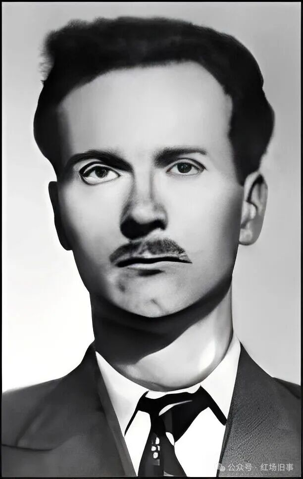
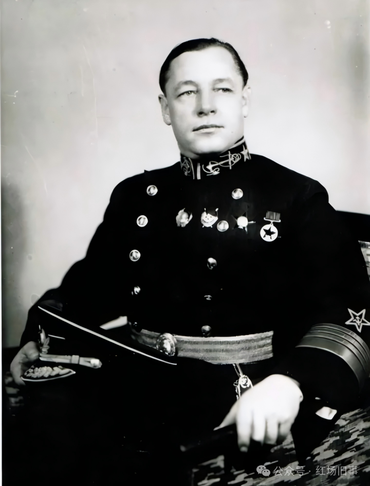

一、最讽刺的任命
1944年，伦敦。战争的硝烟还未散尽，英国情报界已经在谋划战后的事了。秘密情报局，也就是军情六处。决定成立一个专门对付苏联的部门：第九科。它的任务很简单：反苏反共，铲除潜伏在英国政权里的苏联鼹鼠。谁能胜任这个职位？军情六处处长孟席斯环顾四周，目光落在了一个人身上。金·菲尔比，32岁，剑桥毕业，聪明能干，在反间谍领域战绩卓著。
他刚刚成功处理了几起棘手的德国间谍案，深得上司信任。

孟席斯不知道的是，就在他签下任命书的那个下午，菲尔比已经通过秘密渠道，把第九科的全部计划送到了莫斯科。世界上最讽刺的一幕发生了：苏联情报机构在英国的最高级别间谍，成了英国反间谍部门中专门对付苏联的负责人。
二、库尔斯克的“神助攻”
菲尔比并不是一个人在战斗。1942年5月，剑桥五杰中最晚加入的约翰·克恩克罗斯被安排进了一个极其敏感的单位，位于布莱奇利公园的英国政府通讯密码学校。

这里，是英国破译德国恩尼格玛密码机的心脏。克恩克罗斯的主要工作是截获、分析德军的无线电通讯。1943年春，他接触到了一份极为重要的情报：德军计划在库尔斯克突出部发动大规模进攻，并附带了精确的兵力部署清单。英国人把这份情报发给了苏联，但做了大量删节，他们不想暴露自己的密码破译能力。克恩克罗斯做了另一件事。
他趁着下班，把完整的解密文件藏在裤子里，带出了布莱奇利公园。完整的清单，包括德国所有准备进攻库尔斯克的航空大队及其部署情况，经由秘密渠道，一字不差地送到了莫斯科。1943年5月6日，苏联空军在长达1200千米的战线上，对德军17个机场发动了毁灭性的先发打击。三天内出动1400架次，摧毁德军飞机500余架。
苏军副总参谋长库兹涅佐夫中将在给情报总局的复函中写道：“收到的情报用处很大。希望尽快报送。”

库尔斯克会战后，德军彻底丧失了对苏战略主动权。而这一切的背后，有一个苏格兰人在布莱奇利公园的办公桌前，把机密文件塞进了裤兜。
三、沃尔科夫的“人间蒸发”
真正的危机，在1945年秋天降临。9月，苏联驻伊斯坦布尔副领事康斯坦丁·沃尔科夫秘密走进英国领事馆。他告诉英国官员：他要叛逃。作为交换条件，他愿意提供250名潜伏在英国的苏联间谍名单，其中包括两名英国外交部的官员，以及一名“在伦敦担任反间谍部门负责人”的高级特工。那个“反间谍部门负责人”，指的就是菲尔比。
这份密报用了整整一周才送到伦敦，沃尔科夫警告说英国电报已被苏联破译，要求通过外交邮袋传送。9月9日，军情六处处长孟席斯把文件交给了菲尔比。菲尔比盯着那些纸，他迅速做出了决定。他告诉孟席斯，这个案子很重要，但档案里查不到沃尔科夫的信息，建议派一个熟悉情况的人去伊斯坦布尔亲自处理。孟席斯原本打算派军情五处的罗伯茨准将去，但罗伯茨恐高，不敢坐飞机。
菲尔比顺势主动请缨。孟席斯大加赞赏，当场批准。但菲尔比没有立刻动身。他先用秘密渠道把沃尔科夫的全部信息发往莫斯科，然后才以“跨部门协调”为由，拖延了三周才出发。当他终于抵达伊斯坦布尔时，英国领事馆的佩奇副领事拨通了苏联领事馆的电话。“请找一下沃尔科夫。”接线员说：“沃尔科夫在莫斯科。”砰，挂断了。佩奇亲自前往苏联领事馆。
得到的答复是：“我们从来没有听说过这个人。”菲尔比知道发生了什么。克格勃收到了他的预警，先他一步，把沃尔科夫夫妇“处理”了。有目击者说，曾看到两个浑身裹满绷带的人被抬上了一架飞往莫斯科的飞机。沃尔科夫从此人间蒸发。 据说他在卢比扬卡监狱被拷打处决。菲尔比后来形容，这是他双面间谍生涯中“最惊险的一次”。
尾声
沃尔科夫事件后，菲尔比不仅没有被怀疑，反而因为“处理得力”而地位更加稳固。1947年，他被派往伊斯坦布尔担任军情六处土耳其情报站站长，公开身份是英国驻土耳其大使馆一等秘书。他的任务是反苏。而他在伊斯坦布尔做的第一件事，就是向莫斯科汇报了土耳其情报站的全部运作计划。那个差点当上军情六处局长的男人，正一步步走向他双重人生的巅峰。
而更大的风暴，正在海峡对岸酝酿。
【互动留言】
如果你是1945年的菲尔比，面对沃尔科夫这份足以让你上绞刑架的名单，你会怎么做？欢迎在评论区留下你的推理。下期，我们将揭开1951年那场惊天出逃的内幕，伯吉斯和麦克林是如何在军情五处的眼皮底下消失的。
文字与图片版权归各自权利人所有。排版根据抓取内容整理，原文请见上方链接。